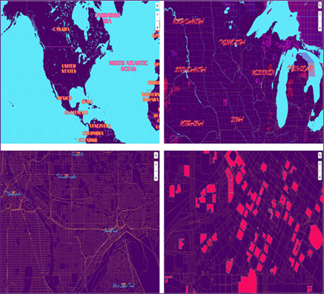

Personal Philosophy & Style
Cartography and GIS (Geographic Information Systems) are often times tied at the hip. Cartography is often thought of a niche and antiquated field, specializing in the design and usage of maps.
GIS on the other hand is on the bleeding edge of the big data frontier, combining statistical analysis with spatial attribute information to analyze and predict patterns of gigantic datasets. However, to make use of all of this data, professionals must visualize it. That is easier said than done.
Cartographers who can process large datasets, synthesize the importants aspects, perform spatial and statistical anaylsis on the dataset, and then visualize the information in a compelling and concise way to a viewer are valuable and hard to come by.
This is the service I can provide. Doing both sides of the Cartography and GIS coin, not only coming away with key takeaways from datasets but also being able to produce stories, graphs, and maps that can persuade viewers to take note and become motivated by the story I am telling. Being able to produce aesthetically pleasing graphics about throughly analyzed information is my major skill and is something I look to bring to every project and problem I work on.
I try and keep the mantra "Less is more" in mind when I am designing a visual or putting together a storyboard. Contrast is often a more powerful tool than a specific color scheme, and results in a more professional and nuanced look.
I think designers get into trouble when they "overdesign", that is, make colors and patterns more complicated than they should be. The design should simply enhance your main points, and guide the viewer in the right direction. It should not take over precedence over the story itself.
Take a look at some of my previous work, let me know what you think. If anything piques your interest, don't hestitate to contact me about anything that's on your mind. I am always eager to reach out and make new connections.
Previous Projects
Northwestern United States Swiss Style Map

Mapbox Miami Vice Stylized Basemap
Twin Cities, Minneosta Transit Lines